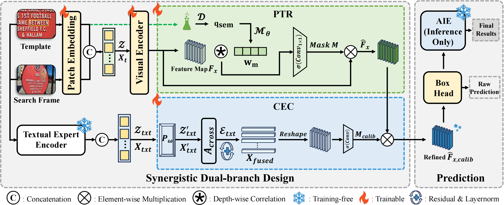

SYMTRACK
Beyond Detection: A Structure-Aware Framework for Scene Text Tracking
Abstract
Modern visual object trackers show impressive results on general targets, yet their performance drops substantially when dealing with scene text. Although currently underexplored, tracking text in videos is essential for dynamic text manipulations such as segmentation, removal, and editing. To fill this gap, this paper formalizes this specific task as Scene Text Tracking and present the first systematic work for it. We identify three primary challenges in this task: 1) severe geometric distortions from perspective shifts, 2) high visual ambiguity across different instances, and 3) high sensitivity to fine-grained structural details. To address these issues, we propose SymTrack, a unified detection-free framework with synergistic dual-branch design. It integrates a Cross-Expert Calibration mechanism to reduce semantic bias, along with a Predictive Token Rectification mechanism to correct structural imbalances, complemented by an Adaptive Inference Engine that stabilizes predictions under motion constraints. Considering the lack of dedicated benchmarks for this task, we utilize three datasets from video text spotting to construct a benchmark with high-quality annotations. Extensive experiments demonstrate that SymTrack sets the new state-of-the-art on all three benchmarks, outperforming previous best trackers by up to 11.97% AUC on BOVTextSOT. Overall, our work promotes efficient and thorough text tracking, paving the way toward more generalized video text manipulation.
Method Overview

Overview of SymTrack. SymTrack adopts a synergistic dual-branch design for scene text tracking. The PTR branch performs predictive token rectification to alleviate structural imbalance, while the CEC branch injects text-specific priors to suppress visually ambiguous distractors. During inference, the training-free AIE dynamically adapts the search region and regularizes temporal predictions.
Benchmark Results
State-of-the-art comparison on ArTVideoSOT, DSTextSOT, and BOVTextSOT. Subscripts denote the corresponding configuration and input resolution. V-L denotes visual-language tracking. VTS models are excluded on BOVTextSOT due to the lack of Chinese character sets in their public implementations.
| Type | Method | Venue | ArTVideoSOT | DSTextSOT | BOVTextSOT | ||||||
|---|---|---|---|---|---|---|---|---|---|---|---|
| AUC | PNorm | P | AUC | PNorm | P | AUC | PNorm | P | |||
| Vision-only | SiamRPN++ | CVPR2019 | 56.40 | 67.30 | 71.90 | 44.40 | 54.40 | 63.20 | 58.70 | 71.50 | 65.50 |
| STARK | ICCV2021 | 70.37 | 83.48 | 86.84 | 57.59 | 68.63 | 78.01 | 61.92 | 75.16 | 76.33 | |
| OSTrack256 | ECCV2022 | 64.86 | 77.95 | 81.99 | 52.50 | 63.49 | 70.83 | 58.67 | 73.04 | 74.03 | |
| OSTrack384 | ECCV2022 | 64.80 | 77.82 | 82.05 | 54.83 | 66.51 | 74.44 | 59.18 | 72.68 | 73.30 | |
| AiATrack | ECCV2022 | 66.41 | 77.96 | 81.77 | 57.92 | 68.12 | 79.02 | 64.16 | 75.07 | 73.42 | |
| SeqTrackL384 | CVPR2023 | 64.35 | 76.46 | 80.92 | 54.63 | 65.81 | 74.19 | 60.42 | 76.18 | 76.70 | |
| ARTrack256 | CVPR2023 | 64.85 | 78.81 | 79.53 | 48.53 | 56.12 | 65.20 | 62.75 | 72.28 | 73.01 | |
| GRM256 | CVPR2023 | 68.22 | 79.84 | 83.30 | 53.05 | 63.87 | 71.04 | 59.59 | 72.12 | 72.82 | |
| GRM384 | CVPR2023 | 68.47 | 80.65 | 83.64 | 55.51 | 66.07 | 74.63 | 59.13 | 71.02 | 71.66 | |
| ROMTrack | ICCV2023 | 70.62 | 83.32 | 87.13 | 56.82 | 68.79 | 75.61 | 62.82 | 73.74 | 74.90 | |
| ODTrack | AAAI2024 | 69.81 | 83.54 | 86.68 | 62.71 | 75.84 | 84.26 | 64.74 | 77.74 | 78.45 | |
| SymTrack (Ours) | - | 77.74 | 91.29 | 95.88 | 70.66 | 83.61 | 91.83 | 77.06 | 90.05 | 90.18 | |
| V-L | DUTrack256 | CVPR2025 | 68.73 | 82.46 | 86.87 | 60.57 | 72.77 | 81.31 | 65.09 | 78.98 | 79.04 |
| DUTrack384 | CVPR2025 | 72.09 | 85.97 | 89.36 | 63.63 | 76.72 | 85.00 | 65.08 | 79.41 | 79.30 | |
| VTS | TransVTSpotter | NeurIPS2021 | 8.84 | 78.11 | 38.07 | 4.93 | 75.21 | 67.80 | - | - | - |
| TransDETR | IJCV2024 | 9.18 | 78.75 | 43.31 | 5.08 | 76.09 | 69.79 | - | - | - | |
The best results are highlighted in bold, and the second-best results are underlined.
BibTeX
@inproceedings{yu2026symtrack,
title={Beyond Detection: A Structure-Aware Framework for Scene Text Tracking},
author={Yu, Chenmin and Yu, Liu and Wu, Daiqing and Li, Gengluo and Chen, Zeyu and Zhou, Yu},
booktitle={Proceedings of the 43rd International Conference on Machine Learning},
year={2026},
url={https://EdisonYCM.github.io/SymTrack/}
}